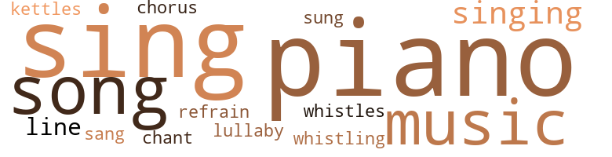
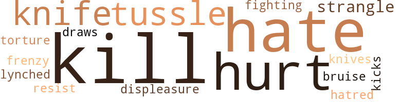

Music terms in the text
54 music-related terms matched in this text.
Most frequent terms in this topic: piano (14); sing (7); sings (6); song (5); music (5)

chorus.n.01
Definition: any utterance produced simultaneously by a group
| word |
sentence |
| chorus |
She ends in a little sob , but attempts to cover it by singing , lightly and daintily , the chorus of " The Owl and the Moon . " |
kettle.n.04
Definition: a large hemispherical brass or copper percussion instrument with a drumhead that can be tuned by adjusting the tension on it
| word |
sentence |
| kettles |
And in the kitchenette painted blue and white , and smelling sweet with paint is everything : bright pots and pans and kettles , and blue and white enamel-ware , and all kinds of knives and forks and spoons - and on the door - a roller-towel . |
lullaby.n.01
Definition: a quiet song intended to lull a child to sleep
| word |
sentence |
| lullaby |
( Goes to the table and in an abstracted manner puts books on the bookcase ; returns to the table ; picks up the roll of sheet music she has brought home with her ; brightens ; impulsively ) Ma dear , just listen to this lullaby . |
music.n.01
Definition: an artistic form of auditory communication incorporating instrumental or vocal tones in a structured and continuous manner
| word |
sentence |
| music |
( Goes to the table and in an abstracted manner puts books on the bookcase ; returns to the table ; picks up the roll of sheet music she has brought home with her ; brightens ; impulsively ) Ma dear , just listen to this lullaby . |
| music |
( She rushes to the piano with the music and plays the accompaniment through softly and then sings , still softly and with great expression , Jessie Gaynor 's " Slumber Boat ' > ) - Baby 's boat 's the silver moon ; Sailing in the sky , Sailing o'er the sea of sleep , While the clouds float by . |
| music |
On top is music neatly piled . |
| music |
In her left arm she carries four or five books strapped together ; under her right , a roll of music . |
| music |
Then Rachel throws her books upon the dining-room table , places the music there also , but with care , and rushing to her mother , gives her a bear hug and a kiss . |
piano.n.01
Definition: a keyboard instrument that is played by depressing keys that cause hammers to strike tuned strings and produce sounds
| word |
sentence |
| piano |
Mrs. Lane : Do you mind if I send Ethel over by the piano to sit ? |
| piano |
( Places a chair by the piano and goes to the little girl holding out her hand . |
| piano |
She puts the fern on top of the piano , and places the vase in the centre of the table ) . |
| pianos |
I 'll remember you when these people around here come for me to move pianos and such things around . |
| piano |
Jimmy : Will you sing - at the piano , I mean , it 's lots prettier that way - the little song you used to rock me to sleep by ? |
| piano |
Rachel ( Shaking her head sadly , goes to the piano ; in a whisper ) : The last time . |
| piano |
( She rushes to the piano with the music and plays the accompaniment through softly and then sings , still softly and with great expression , Jessie Gaynor 's " Slumber Boat ' > ) - Baby 's boat 's the silver moon ; Sailing in the sky , Sailing o'er the sea of sleep , While the clouds float by . |
| piano |
Rachel ( For several minutes watches her mother 's profile from the piano stool . |
| piano |
( Moves quickly to the piano ) . |
| piano |
Strong goes slowly to the piano . |
| piano |
There are comfortable leather chairs , just the right size , and a beautiful piano - that I leave open - sometimes , and lovely pictures of Madonnas . |
| piano |
But - ( Watches her mother a moment or two longer ; shakes her head ; turns back to the piano . |
| piano |
Presently Rachel raises her eyes to Raphael 's " Madonna " over the piano . |
| piano |
Against the front end of the left wall is an upright piano with a stool in front of it . |
| piano |
Hanging over the piano is Raphael 's " Sistine Madonna . " |
refrain.n.01
Definition: the part of a song where a soloist is joined by a group of singers
| word |
sentence |
| refrain |
Then softly and with infinite tenderness , almost against her will , she plays and sings again the refrain of the " Slumber Boat " ) : " Sail , baby , sail Out from that sea , Only do n't forget to sail Back again to me . " |
sing.v.02
Definition: produce tones with the voice
| word |
sentence |
| sing |
Jimmy : Will you sing - at the piano , I mean , it 's lots prettier that way - the little song you used to rock me to sleep by ? |
| sing |
Tonight , you shall have the little song - I used to sing you to sleep by ( half to herself ) perhaps , for the last time . |
| sings |
( She twists up her hair into a knot at the hack of her head and looks at the keys for a few moments ; then she plays the accompaniment of the " Slumber Boat " through softly , and , after a moment , sings . |
| sings |
Then softly and with infinite tenderness , almost against her will , she plays and sings again the refrain of the " Slumber Boat " ) : " Sail , baby , sail Out from that sea , Only do n't forget to sail Back again to me . " |
| sing |
We sing a song at school , I believe , about " The land of the free and the home of the brave . ' |
| sings |
( She rushes to the piano with the music and plays the accompaniment through softly and then sings , still softly and with great expression , Jessie Gaynor 's " Slumber Boat ' > ) - Baby 's boat 's the silver moon ; Sailing in the sky , Sailing o'er the sea of sleep , While the clouds float by . |
| sings |
( Plays and sings very softly and slowly ) : " Only do n't forget to sail Back again to me . " |
| sing |
Or I 'll sing to you . |
| sing |
You used to like to hear me sing ; you said my voice , I remember , was sympathetic , did n't you ? |
| sing |
I 'll sing you a pretty little song . |
| sung |
I 've never sung it to you before . |
| sang |
( Pauses , looks down , before she begins , then turns toward him and says quietly and sweetly ) Sometimes - in the coming years - I want - you to remember - I sang you this little song . |
| sings |
Rachel sings ) : " The roses of yester-year Were all of the white and red ; It fills my heart with silent fear To find all their beauty fled . |
| sing |
They will laugh and play and sing and be happy and grow up , perhaps , and be ambitious - just for that ? |
singing.n.01
Definition: the act of singing vocal music
| word |
sentence |
| singing |
She ends in a little sob , but attempts to cover it by singing , lightly and daintily , the chorus of " The Owl and the Moon . " |
| singing |
During the singing , Tom and Mrs. Loving apparently do not listen ; when she sobs , however , Tom 's hand on his paper tightens ; Mrs. Loving 's needle poises for a moment in mid-air . |
| singing |
Think of it , Jimmy ; nothing but birds always singing , and flowers always blooming , and skies always blue - and people , all of them , always laughing , laughing . |
| singing |
Rachel is heard singing . |
song.n.01
Definition: a short musical composition with words
| word |
sentence |
| songs |
Never bad they seen such blue skies , such green trees and grass ; never had they heard such birds songs . |
| song |
Jimmy : Will you sing - at the piano , I mean , it 's lots prettier that way - the little song you used to rock me to sleep by ? |
| song |
Tonight , you shall have the little song - I used to sing you to sleep by ( half to herself ) perhaps , for the last time . |
| song |
We sing a song at school , I believe , about " The land of the free and the home of the brave . ' |
| song |
I 'll sing you a pretty little song . |
| song |
( Pauses , looks down , before she begins , then turns toward him and says quietly and sweetly ) Sometimes - in the coming years - I want - you to remember - I sang you this little song . |
tone.v.01
Definition: utter monotonously and repetitively and rhythmically
| word |
sentence |
| chant |
Rachel : I do n't think much of your knowledge , Tommy dear ; but ( continuing to chant ) Our Tommy 's on the team ! |
tune.n.01
Definition: a succession of notes forming a distinctive sequence
| word |
sentence |
| lines |
Economically , in a few lines , we have a slight show - but at what a cost ! |
| line |
Baby 's fishing for a dream , Fishing near and far , His line a silver moonbeam is , His bait a silver star . |
whistle.n.01
Definition: the sound made by something moving rapidly or by steam coming out of a small aperture
| word |
sentence |
| whistles |
He whistles . |
whistle.v.01
Definition: make whistling sounds
| word |
sentence |
| whistling |
The whole time he is whistling blithely a popular air . |
whistle.v.05
Definition: make a whining, ringing, or whistling sound
| word |
sentence |
| sings |
Her expression becomes rapt ; then , very softly , her eyes still on the picture , she plays and sings Nevin 's " Mighty Lak A Rose " ) - Sweetest li ' l feller , Ev'ry body knows ; Du n no what to call him , But he mighty lak ' a rose ! |
Violence terms in the text
38 violence-related terms matched in this text.
Most frequent terms in this topic: kill (8); hate (6); hurt (5); knife (2); strangle (2)

bruise.n.01
Definition: an injury that doesn't break the skin but results in some discoloration
| word |
sentence |
| bruise |
There is still a bruise on his little back where one struck him . |
craze.n.02
Definition: state of violent mental agitation
| word |
sentence |
| frenzy |
( With sudden frenzy ) You can laugh , Oh God ! |
displeasure.n.01
Definition: the feeling of being displeased or annoyed or dissatisfied with someone or something
| word |
sentence |
| displeasure |
The displeasure vanishes from her face ) . |
draw.v.23
Definition: pull (a person) apart with four horses tied to his extremities, so as to execute him
| word |
sentence |
| draws |
Rachel ( Puzzled , but gracious ; draws up a chair for her ) : Why , certainly . |
fight.v.02
Definition: fight against or resist strongly
| word |
sentence |
| fighting |
All are fighting to be close to her ; and all are talking at once . |
hassle.n.02
Definition: disorderly fighting
| word |
sentence |
| tussle |
There is a tussle for possession of it , and they disappear . |
| tussle |
( A tremendous tussle and scuffle ensues ) . |
hate.n.01
Definition: the emotion of intense dislike; a feeling of dislike so strong that it demands action
| word |
sentence |
| hatred |
( His face becomes distorted with passion and hatred ) . |
hate.v.01
Definition: dislike intensely; feel antipathy or aversion towards
| word |
sentence |
| hate |
I hate him . |
| hate |
Little Nancy : I 'll tell you sometime - I hate him . |
| hate |
I hate to go to bed ! |
| hate |
Say , Ma , I hate to see you work so hard . |
| hate |
Rachel ( Vehemently ) : I hate him ! |
| hate |
Why hate him ? |
| hates |
His loves were big and his hates . |
hurt.v.04
Definition: cause damage or affect negatively
| word |
sentence |
| hurt |
Jimmy : You 're only saying that , Ma Rachel , so I wo n't be hurt . |
| hurt |
Tom : I do n't know , Ma , but I feel , as you do ; something terrible and sudden has hurt her soul ; and , poor little thing , she 's trying bravely to readjust herself to life again . |
kick_back.v.02
Definition: spring back, as from a forceful thrust
| word |
sentence |
| kicks |
Jimmy ( Throws his cane aside , rolls on the floor and kicks up his heels . |
kill.v.10
Definition: cause the death of, without intention
| word |
sentence |
| kill |
If I had another - I 'd kill it . |
| kill |
Jimmy : If you hurt them , it would be lots kinder , would n't it , to kill them all at once , and not a little bit and a little bit ? |
| kill |
If I kill , You Mighty God , I kill at once - I do not torture . |
| kill |
If I kill , You Mighty God , I kill at once - I do not torture . |
| kill |
Strong : Rachel , - why - why - did you - kill the roses - then ? |
| kill |
Rachel , little girl , why - did you kill them ? |
| kill |
Rachel ( Breathing quickly ) : Do n't you believe - it - a - a - kindness - sometimes - to kill ? |
| kill |
Strong ( After a pause ) : You - considered - it - a - kindness - to kill them ? |
| kills |
( To Strong ) If it nearly kills me to hear my Jimmy 's crying , do you think I could stand it , when my own child , flesh of my flesh , blood of my blood - learned the same reason for weeping ? |
knife.n.02
Definition: a weapon with a handle and blade with a sharp point
| word |
sentence |
| knife |
( Rachel , with a knife in her hand , looks up unsmiling . |
| knife |
May I request , humbly , that before I press my chaste , morning salute upon your forbidding lips , that you - that you - that you - er - in some way rid yourself of that - er - knife ? |
| knives |
And in the kitchenette painted blue and white , and smelling sweet with paint is everything : bright pots and pans and kettles , and blue and white enamel-ware , and all kinds of knives and forks and spoons - and on the door - a roller-towel . |
lynch.v.01
Definition: kill without legal sanction
| word |
sentence |
| lynched |
And then - one night - ten years ago - a mob made up of the respectable people in the town lynched an innocent black man - and what was worse - they knew him to be innocent . |
pain.v.02
Definition: cause emotional anguish or make miserable
| word |
sentence |
| hurt |
Tom and I both believe her soul has been hurt . |
| hurt |
I was afraid , in the streets - in the school - in the church , everywhere , always , afraid of being hurt . |
| hurt |
Then it hurt to see him ; now it would hurt not to . |
resist.v.04
Definition: withstand the force of something
| word |
sentence |
| resist |
When she finds it useless , she ceases to resist . |
strangle.v.01
Definition: kill by squeezing the throat of so as to cut off the air
| word |
sentence |
| strangle |
Why - it would be more merciful - to strangle the little things at birth . |
| strangle |
( Kisses him ; he tries to strangle her with hugs ) . |
torment.v.01
Definition: torment emotionally or mentally
| word |
sentence |
| torture |
If I kill , You Mighty God , I kill at once - I do not torture . |
Religion terms in the text
34 religion-related terms matched in this text.
Most frequent terms in this topic: God (15); Heaven (3); imitation (2); church (2); sacrifice (1)

church.n.02
Definition: a place for public (especially Christian) worship
| word |
sentence |
| church |
They have everything ; they 're well-dressed , well-fed , well-housed ; they 're prosperous in business ; they 're important politically ; they 're pillars in the church . |
| church |
I was afraid , in the streets - in the school - in the church , everywhere , always , afraid of being hurt . |
church.n.04
Definition: the body of people who attend or belong to a particular local church
| word |
sentence |
| Church |
That 's your Church of God ! |
eden.n.01
Definition: any place of complete bliss and delight and peace
| word |
sentence |
| Heaven |
Mrs. Loving ( Appearing in the doorway in the rear ) : For Heaven 's sake ! |
| Heaven |
Mrs. Loving : Rachel , for Heaven 's sake ! |
| Heaven |
Mrs. Loving ( Laughing ) : For Heaven 's sake ! |
god.n.03
Definition: a man of such superior qualities that he seems like a deity to other people
| word |
sentence |
| God |
( Another silence ) Tom ( Slowly ; as though thinking aloud ) : I hear people talk about God 's justice - and I wonder . |
| God |
- God 's justice , I suppose . |
| God |
Tom , we do n't understand God 's ways . |
| God |
She was made to sit there all alone - in that big room - because God made her ugly - and black . |
| God |
God or the devil interfered - the bell rang . |
| God |
It 's all a lie about God . |
| God |
I did n't belive God could laugh at our sufferings , hut He can . |
| God |
God keep you all the night ! |
| God |
God keep you all the night ! |
| God |
God keep you all the night . |
| God |
Even God ca n't take you away . |
| God |
And , Ma dear , because I love them best , I pray God every night to give me , when I grow up , little black and brown babies - to protect and guard . |
| God |
God gave me one for a husband and one for a son and I am proud . |
| God |
Mrs. Loving : Yes , God 's ways are strange and often very beautiful ; perhaps all would be beautiful - if we only understood . |
| God |
Rachel : God 's ways are certainly very mysterious . |
imitation.n.01
Definition: the doctrine that representations of nature or human behavior should be accurate imitations
| word |
sentence |
| imitation |
She coughs like this ( giving a distressing imitation ) and snuffles all the time . |
| imitation |
That 's only an imitation smile , but it 's better than none . |
prophet.n.02
Definition: someone who speaks by divine inspiration; someone who is an interpreter of the will of God
| word |
sentence |
| prophet |
Well , I 'm no prophet , but I see very distinctly what is going to happen . |
| prophets |
The old prophets in the Bible were not more terrible than he . |
religion.n.01
Definition: a strong belief in a supernatural power or powers that control human destiny
| word |
sentence |
| faith |
Mrs. Loving : That - you 'll try - not to lose faith - in God . |
sacrifice.v.04
Definition: make a sacrifice of; in religious rituals
| word |
sentence |
| sacrifice |
We strive and save and sacrifice to educate them - and the whole time - down underneath , we know - they 'll have no chance . |
saint.n.02
Definition: person of exceptional holiness
| word |
sentence |
| angels |
W'en his dar a sleepin ' In his li ' l place Think I see de angels Lookin ' thro ' de lace ; W'en de dark is failin ' , W'en de shadders creep , Den dey comes on tip-toe , Ter kiss him in his sleep . |
| Saint |
He was a Saint ! |
satan.n.01
Definition: (Judeo-Christian and Islamic religions) chief spirit of evil and adversary of God; tempter of mankind; master of Hell
| word |
sentence |
| devil |
God or the devil interfered - the bell rang . |
| devils |
When I think - when I think - of those devils with white skins - living somewhere today - living and happy - I - see - red ! |
tone.v.01
Definition: utter monotonously and repetitively and rhythmically
| word |
sentence |
| chant |
Rachel : I do n't think much of your knowledge , Tommy dear ; but ( continuing to chant ) Our Tommy 's on the team ! |
worship.v.02
Definition: show devotion to (a deity)
| word |
sentence |
| worships |
She worships him . |
| worshiped |
From the very beginning he worshiped your father . |